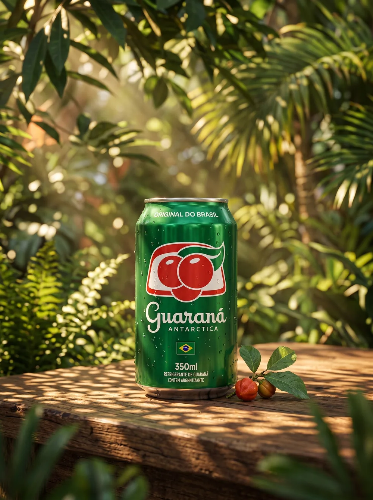
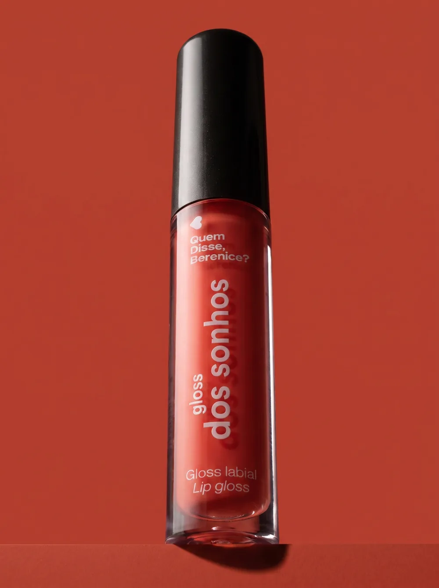
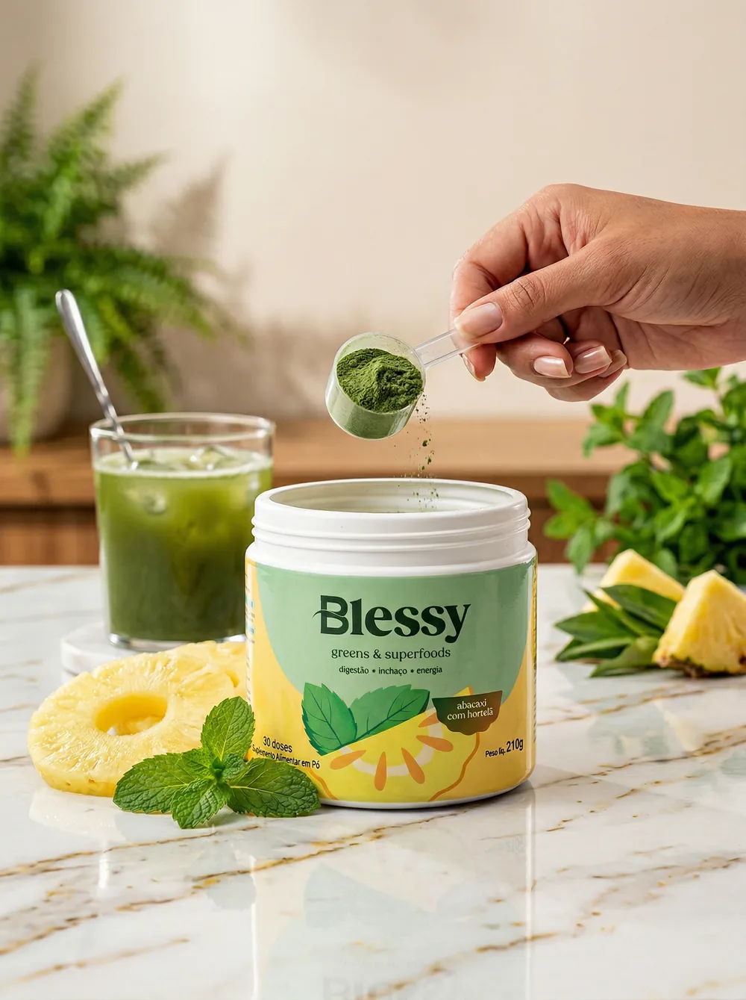
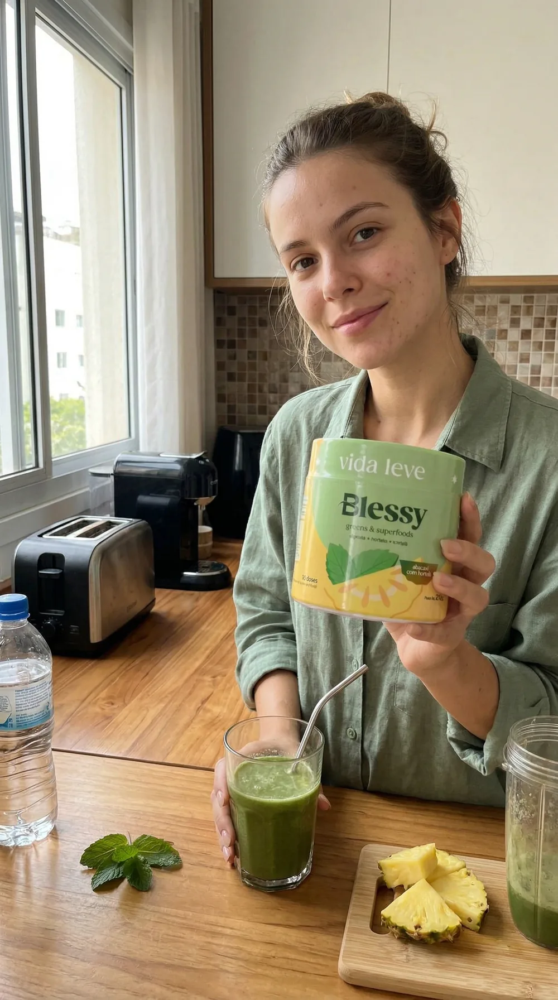
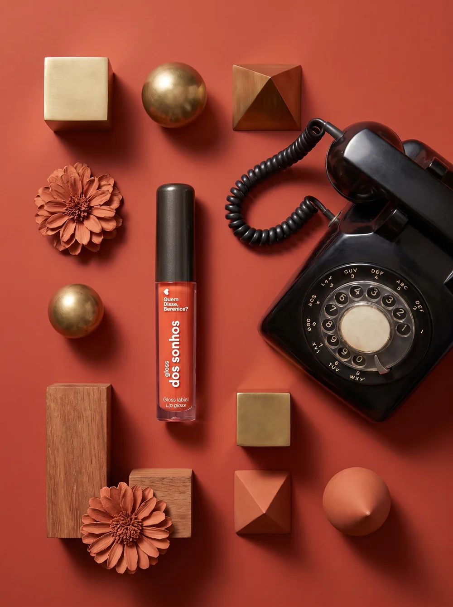
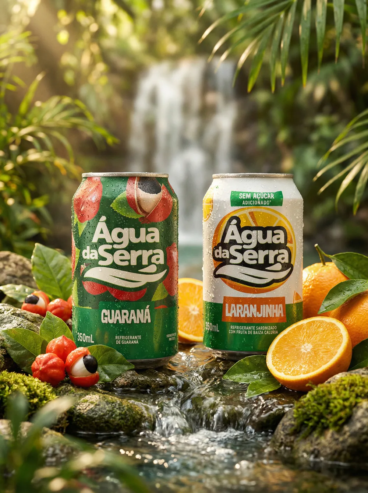
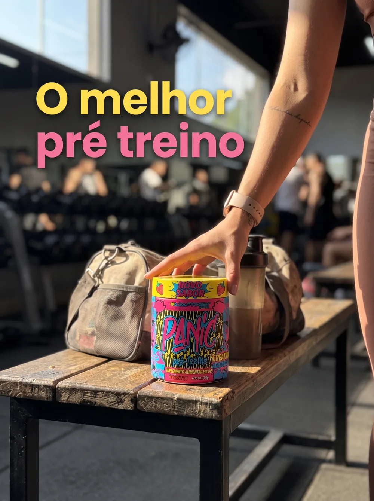

01 / ENCONTRE
Busque uma direção.
Explore as 31 categorias ou use a busca para encontrar uma base relacionada à sua criação.
ProdutoRetratoVídeo
BIBLIOTECA DE PROMPTS DE VÍDEO E IMAGEM
Encontre uma base, adapte ao seu produto ou pessoa e use na IA indicada. O CRIA reúne 300 prompts desenvolvidos e refinados por DG para seus projetos visuais.
Para criadores, social media, designers e marcas.
7 dias de garantia • Pix ou cartão pela Kiwify
O CRIA fornece os prompts. A geração acontece em ferramentas de IA, com contas e créditos separados.
Assista ao destaque e explore os vídeos abaixo. Resultados variam por ferramenta, referência e ajustes.
COMO VOCÊ USA
Você escolhe a direção no CRIA e faz a geração na ferramenta de IA indicada.
Explore as 31 categorias ou use a busca para encontrar uma base relacionada à sua criação.
Copie o texto e ajuste produto, pessoa ou contexto. O guia com 6 comandos para ChatGPT ajuda nessa adaptação.
Cole a instrução, adicione as referências necessárias e gere. Confira o resultado e ajuste o que seu projeto pedir.
Ferramentas indicadas na biblioteca
Os recursos e custos dependem da ferramenta escolhida. Contas, planos e créditos são separados.
VEJA AS POSSIBILIDADES
Explore vídeos de produto, UGC, cenas com VFX e animação gerados com os prompts do CRIA. A biblioteca também inclui prompts de imagem.

IMAGEM / PRODUTO
IMAGEM / PACKSHOT
IMAGEM / LIFESTYLE
IMAGEM / UGC
IMAGEM / PACKSHOT
IMAGEM / PRODUTO
IMAGEM / FITNESSOs resultados variam conforme a ferramenta, a versão do modelo, as referências e os ajustes. Não há garantia de resultado idêntico.
R$47 • Compra única • 7 dias de garantia
POR QUE COMPRAR UMA BIBLIOTECA?
O CRIA reúne prompts desenvolvidos e refinados na prática, organizados para você encontrar e adaptar.
Use a seleção de DG como ponto de partida para composições de produto, retratos e cenas de vídeo.
Busca, categorias e indicação de ferramenta ajudam você a escolher por estilo e objetivo.
O guia com ChatGPT ajuda a ajustar a instrução ao seu contexto. A identidade da criação continua sendo sua.
Você não precisa usar todos.
Consulte a biblioteca conforme cada projeto.
Para seu conteúdo e os projetos dos clientes. Uso pessoal e profissional dos prompts incluído.
É necessário usar uma ferramenta de IA e ajustar quando precisar. O CRIA oferece a biblioteca; não gera o conteúdo dentro da plataforma.
O QUE ENTRA NA SUA COMPRA
O acesso ao CRIA reúne imagem, vídeo e adaptação em um só repertório.
Biblioteca de imagem e vídeo + guia de adaptação
à vista • pagamento único
Ou 11x de R$5,22 no cartão.
Total parcelado: R$57,42, com acréscimo.
Pix ou cartão pela Kiwify
Acesso à plataforma após a confirmação do pagamento.
Se não ficar satisfeito, solicite a devolução de 100% do valor dentro de 7 dias. O WhatsApp está disponível para orientação.
Ferramentas de IA, assinaturas e créditos são separados.
ANTES DE DECIDIR
Ficou em dúvida se uma base serve para o seu projeto? Fale diretamente com o criador.
Tirar uma dúvidaO CRIA é uma biblioteca de prompts em uma plataforma com busca, categorias e botão de copiar. A geração acontece na ferramenta de IA indicada: você usa o prompt, adiciona suas referências e ajusta o resultado.
Não. Contas, assinaturas e créditos de ferramentas como GPT Image, Seedance, Kling e Google Flow são separados. Os recursos e custos dependem da ferramenta e do plano que você escolher.
Você não precisa escrever a instrução do zero. Precisa usar uma ferramenta compatível, adicionar as referências necessárias e ajustar o resultado quando precisar. O guia incluído traz 6 comandos para ChatGPT que ajudam na adaptação.
Você pode criar seus próprios prompts ou procurar opções gratuitas. O CRIA reúne as bases desenvolvidas e refinadas por DG em seus testes, organizadas para você buscar, copiar e adaptar. A compra é pelo acesso a essa biblioteca e ao guia de adaptação.
Os prompts foram estruturados para adaptação a diferentes produtos, pessoas e contextos. Escolha uma base relacionada à sua ideia e ajuste as instruções. Se tiver dúvida sobre uma aplicação específica, fale pelo WhatsApp antes de comprar.
Sim. Você pode usar os prompts em projetos pessoais e profissionais, inclusive em trabalhos para clientes. Observe também as condições de uso da ferramenta de IA utilizada.
Não. Consulte a biblioteca conforme precisar de uma composição, estilo ou cena para seu projeto. São 150 prompts de imagem e 150 de vídeo em 31 categorias, com busca e indicação de ferramenta.
Cada geração pode variar conforme a ferramenta, a versão do modelo, a referência e os ajustes. Os exemplos mostram possibilidades dos prompts, não uma garantia de resultado idêntico.
A compra é concluída pela Kiwify. Após a confirmação do pagamento, você recebe acesso à plataforma CRIA para consultar e copiar os prompts. É uma compra única, sem mensalidade do CRIA. As atualizações futuras dos prompts estão incluídas.
Você tem 7 dias para conhecer o CRIA. Se não ficar satisfeito, pode solicitar a devolução de 100% do valor nesse prazo. O contato de WhatsApp está disponível nesta página para orientação.
R$47 à vista, por Pix ou cartão. Também há 11 parcelas de R$5,22 no cartão, totalizando R$57,42 com acréscimo. A Kiwify apresenta as condições antes da conclusão da compra.
Cadastre seus contatos e libere um cupom de 25% OFF.
PARA O SEU PRÓXIMO PROJETO
300 prompts de imagem e vídeo para buscar, copiar e adaptar.
Começar com prompts prontos R$47 • Compra única • Garantia de 7 diasGeração nas ferramentas de IA, com contas e créditos separados.